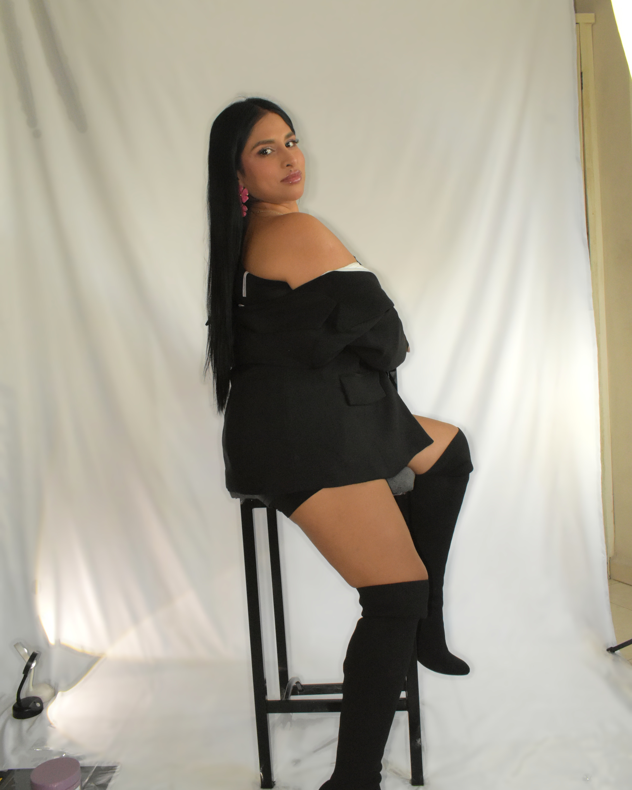
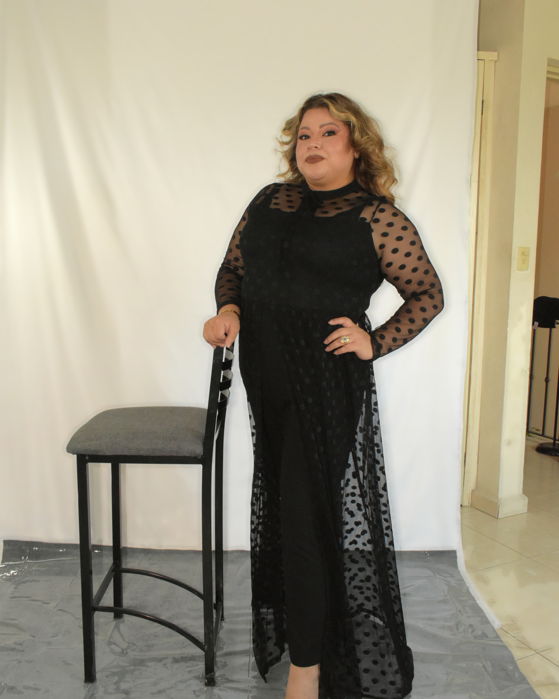
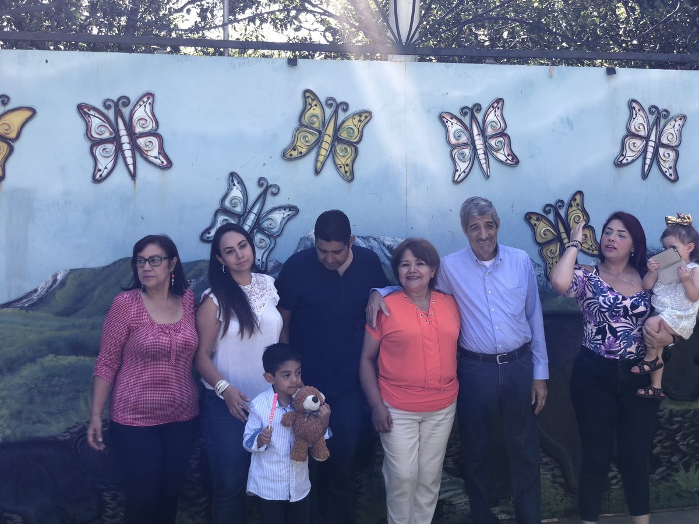
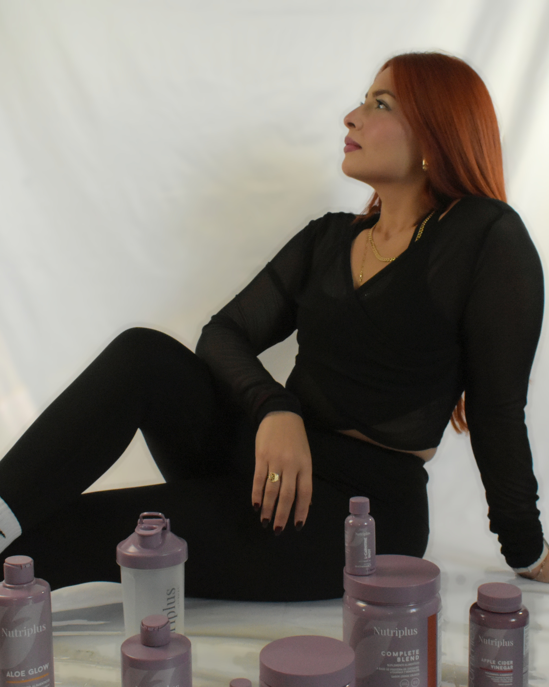

01. Carrusel: La Fotografía No Es un Gasto, Es una Inversión
Fotos 100% limpias (sin textos encima). Todo el argumento de fondo va en el pie de foto (Caption):





SLIDE 1 / 6
CAPTOORA STUDIO · ILUMINACIÓN DE AUTOR · SAN JERÓNIMO
SELECCIONA SLIDE:
📋 Caption Oficial (Instagram & Facebook):
¿Por qué la fotografía nunca es un gasto, sino una inversión? 👇💎
1️⃣ Es eterna como un diamante: La ropa se gasta y los teléfonos se cambian, pero una fotografía de autor nunca caduca. Se queda para siempre.
2️⃣ Gana valor con los años: Hoy tienes una foto linda. En 10, 20 o 30 años con tu familia o en tu mejor momento, esa misma foto se vuelve invaluable. No hay activo con mayor plusvalía emocional.
3️⃣ Certeza y poder probatorio: Una fotografía no miente; documenta la verdad indiscutible. Ante la ley o ante la historia, una imagen prueba quién estuvo ahí y qué sucedió.
4️⃣ Cierra o tira contratos: En marcas personales y negocios, una buena iluminación y retrato transmiten autoridad antes de que digas una sola palabra.
Desliza para ver la serie completa ➡️
¿Ves la fotografía como un gasto pasajero o como una joya para toda la vida? Te leo en los comentarios.
👉 Sígueme en @captoora
#Captoora #FotografiaProfesional #RetratoDeAutor #Monterrey #SanJeronimo #InversionParaSiempre
02. Cuatro Formatos de Convocatoria para Facebook
Publicación lista con fotos reales de estudio de Captoora y copy corto de 3 líneas (el que convierte en grupos de Monterrey):
AG
📸 Se solicita modelo para colaboración (TFP)
📍 Estudio en Colinas de San Jerónimo, Monterrey.
✨ Sesión editorial en ciclorama con iluminación profesional.
🎁 Se entrega material en alta resolución totalmente editado para tu book.
👉 Interesadas mandar DM con su book o dejar comentario para coordinar fecha.
AG
💄 Casting Creadoras & Modelos // Beauty & Makeup
📍 Estudio en San Jerónimo, MTY.
Buscamos rostros para sesión comercial de beauty, piel y maquillaje.
✔️ Iluminación suave de alta definición.
✔️ Fotos listas para tu portafolio y redes.
Mándame mensaje directo para enviarte las referencias visuales.
AG
⚡ Convocatoria Fitness & Sportswear // TFP
📍 Estudio en San Jerónimo.
Sesión en ciclorama blanco con iluminación esculpida deportiva.
Fotos profesionales para tu marca personal o perfil fitness.
Si entrenas y buscas contenido de impacto para tu feed, manda DM o comenta aquí.

AG
🎬 Sesión Editorial de Autor // San Jerónimo
"Para dominar la luz, primero tienes que aprender a controlar la oscuridad."
Buscamos perfiles para retrato conceptual en estudio.
Entrega de selección en alta resolución para tu book.
Comenta abajo o mándame DM para compartirte el moodboard.